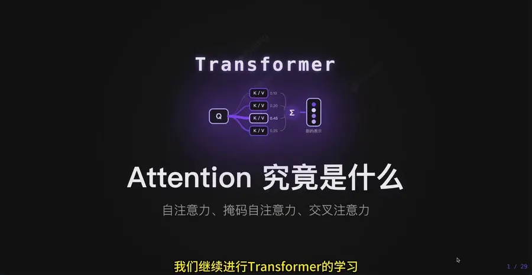

Media to Notes — 带关键板书截图、不瞎编待办的音视频笔记插件
在 GitHub 上开源的一个本地音视频整理插件，可以一句话装进 Claude Code、Codex 或 Alma。平时看一两个小时的技术网课或者整理工作会议录音，市面上常见的一键视频总结有三个麻烦：把关键公式推导浓缩成几句空话、截图抓到一堆讲师正脸、会议没定下来的负责人它会自己编一个填进表里。我把这个过程做成了按步确认的本地插件：开工先问清要哪种结果（要纯逐字稿转写完就停），只在讲到板书公式时截图，没提的人名和日期强制留白写〔未明确〕。
- 我的角色
- 独立设计、流程规则编排与 GitHub 开源交付
- 工作方式
- 开工先确认模式 → 拉取并校对转写（纯逐字稿即停）→ 按板书转折截图 → 外部补充资料单框隔离
- 输入格式
- 在线视频/播客链接（含抖音 / 小宇宙 / 小红书合规拉取）、本地音视频文件或现成字幕稿
- 公开样例
- 34 分钟李宏毅 Transformer 注意力机制课程：整理出 17 个推导小节与 32 张带时间码板书截图
市面上的「一键视频总结」只适合扫一眼大意，拿来做学习笔记和会议纪要并不顺手。
我自己周末常看一两个小时的深度学习公开课或技术播客，工作里也经常需要把长会议录音整理成纪要。试过几款在线一键总结工具后，发现它们在正经学习和工作记录里都有三个固定毛病。
公式推导被压成几句空话
看数学和算法网课时，最有价值的是老师一步步怎么推导；一键总结直接压缩成「本节介绍了注意力机制的作用」，看完还是不会。
按秒抽帧抓到一堆讲师正脸
很多工具要么纯文字没法看公式，要么每 30 秒机械抽一帧，结果文档里塞满讲师大头照和过场黑屏，写满板书的那几秒反而错过了。
会议没定负责人，AI 替你填表
录音里只说了「这事下周再看」，没定人也没定日期；AI 为了把待办表填完整，经常从前文里抓个人名写上去，再自己添个「下周五」。
所以自己写了一个本地能跑的小工具，按三个标准做：第一，按需求决定输出形态，技术课保留推导和板书，会议抓结论和待办，要纯逐字稿就一字不删；第二，每张板书图紧贴讲到它的那段话；第三，原片没交代清楚的人名、数字和期限，一律留白不补。
不同场景对「好笔记」的要求是冲突的，一段提示词兜不住。
把长字幕直接丢给大模型配一句「整理成详细笔记」，效果往往不稳，主要卡在两件事上：
- 开局没有对齐输出预期：同样一段音频，有时候我想要去掉口语啰嗦、完整保留公式推导的教程笔记；有时候只想要一份改掉明显错别字、不许删减原话的逐字稿留底。如果工具不先问一句就按默认模板往下跑，越努力总结越偏离你要的东西。
- 大模型习惯把表格填满：只要要求输出「事项 / 负责人 / 截止时间」三列表格，遇到录音里没人认领的事项，模型很容易顺手抓一个前文出现过的人名填进去。如果允许它联网查资料，它还会把网上搜来的背景解释直接混进主讲人的原话里，读者事后分不清哪句是原片讲的。
理清这两点后，我把它改成了分步确认、关键节点可停下来的工作流，而不是靠单段提示词一次输出到底。
做成装在本地 AI 里的 8KB 插件，用六步流程卡住截图和留白。
具体方案上做了三个核心取舍。
为什么不搭一个带上传按钮的网页，而选择做成 Claude Code / Codex / Alma 的技能插件？
- 独立网页 · 把视频和录音传到第三方服务器几个 G 的课程视频上传慢、费带宽，更关键的是公司内部会议录音不太方便传给外部小网站。
- 本地插件 · 8KB 规则包直接跑在用户自己的电脑上 ✓不少开发者和产品经理电脑上本来就装着 Claude Code、Codex 或 Alma，本地也配好了
ffmpeg和转写工具。把工作流打成一个8 KB插件，发一句话给本地 AI 就能装好，切帧和整理全在本地跑，私密录音不用出本机，还能复用宿主 AI 的看图与长文本能力。
怎么解决乱截大头照和瞎编会议负责人的问题？
- 常规做法 · 每 30 秒抽一帧 + 让模型自由填待办表实现简单，但截图废片多，表格里也混进了模型自己猜的字段。
- 我的做法 · 「讲到板书才抽帧 + 看图验效」与「未知信息写〔未明确〕」 ✓截图环节规定 AI 先通读字幕，只在主讲人讲到「看这张图」「来看这个公式推导」等画面出现板书或图表切换时抽帧，抽完后再用多模态看一眼确认不是讲师正脸，才插在对应段落后面；纪要环节立了两条硬规矩：录音没点名、没定时间的，一律写
〔未明确〕；联网补的背景知识必须放在单列的「外部资料补充」引用框里，和原片原话隔开。
怎么避免用户只要逐字稿时，AI 自作主张改写成摘要？
- 默认全跑 · 拿到音频直接走完整套总结流程浪费时间，还会把口述细节洗掉。
- 前置确认 · 六步流水线在 Step 2 设硬停点 ✓第 0 步先问清需求：「要详细教程笔记、重点摘要、会议纪要，还是纯逐字稿？需不需要联网查补充资料？」如果选了「纯逐字稿」，在第 1 步拿到音频、第 2 步完成转写和专有名词校对后直接交稿结束，不往后多跑一步。

点击放大 点击放大
点击放大
把下载被拒、缺切图工具和未人工精校的情况提前说明白。
做开源插件最容易遇到「在自己电脑上跑通了，别人换个环境就报错卡住」。有的在线平台有防盗链，有的电脑没装 ffmpeg，有的宿主模型不支持看图。我在插件规矩里把几类常见受限情况的处理方式都写明了：
- 在线链接下载受阻：不写绕过付费墙或验证码的脚本。常规拉取被拒时，直接说明原因并提示用户把本地下载好的音视频或字幕文件传进来继续处理。
- 缺看图能力或切图工具：开始前先检查本机有没有
ffmpeg以及当前模型是否支持看图。缺环境时提前告知「本次将降级为纯文字结构化笔记，不插截图」，不假装看懂了画面乱配图。 - 最后一步自动核对并标注边界：写完 Markdown 后，第 6 步会核对一遍所有图片路径是否存在、时间码格式是否正确；同时在文末附上说明——「本笔记已通过自动化结构与图片核对，但尚未经过人工逐句精校，关键决策请结合时间码回听原音」。
仓库里附带一堂 34 分钟网课的完整笔记产物，长视频切段还有改进空间。
Media to Notes 已开源在 GitHub 仓库里。为了让别人不用安装就能看成色，我拿一节 34 分钟的《Transformer 注意力机制究竟在做什么》公开课跑了一遍完整流程，产出了一份包含 17 个推导小节、32 张时间码对齐板书截图的 Markdown 样例笔记，一并放在仓库里。
用下来省心的几点
- 开工前多问一句模式选择，省掉绝大多数返工，也避免了 AI 擅自把逐字稿浓缩成摘要。
- 明确规定未知信息写
〔未明确〕，显眼的留白能提醒开会的人去补确认，比编一个假人名安全得多。 - 8 KB 零依赖装进本地 AI 工具里，会议录音不需要离开自己电脑。
目前的局限与下一步
- 32 张板书来自单堂高密度课程：不同视频信息密度差别很大，板书密集的算法课能截出三十多张图，纯对话播客可能一张都不用截，这不是固定数字。
- 长视频话题切分偏机械：遇到主讲人语速平稳、没有明显「接下来讲下一部分」提示词的 2 小时长课，章节切分有时还是偏固定时长。下一步打算先让模型通扫一遍字幕抽出话题转换锚点，再按话题边界分段。
附录：复制这段话发给你的本地 AI，即可自动安装
发给 Claude Code / Codex / Alma 的安装提示词
不需要手动敲下载命令，把下面这段话直接发给你的本地 Agent，它会自动拉取完整的 media-to-notes 目录并放进你的技能库：
FinDesk — 每个数字都能点开原表核对的股票投研工作台 →
回去看我怎么用 120 道真实年报测试题把无出处数字降到 0%，或者直接点开线上的 v4 公开研究笔记本试一下。